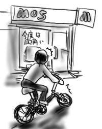
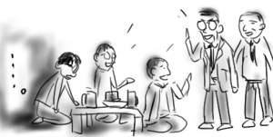
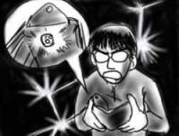
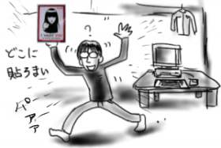

適当なところで会社を出て、バスに乗り、スーパーまで行こうと思って退室していると、喫煙室から部屋に戻っている先輩に呼び止められました。質問を聞いているうちにバスの出発の時間になってしまったので結局部屋に戻って質問について調べることに。
軽く調べるだけでとりあえずのことは分かったので問題はなかったのですが、バスに乗り遅れたことを知った先輩は「じゃぁ僕が車で(家まで)送ってあげよう」と言ってくれました。しかし、僕は、当初の予定通りスーパーに行きたいので「いや、今日はスーパーまで行ってお米を買わないといけないんで、次のバスで…」と申し出を断ったところ、そのお米を買いに行くという行動が大層おもしろかった様子で「じゃぁお米を買いに行こう」と言うので、結局先輩の車でスーパーまでの旅路へ出発したのです。
ところが、先輩はなぜか道沿いにある「お米の自動販売機」でお米を買おうと言い出してききません。「いやですよ！いつのお米が入ってるか分からないし、自動販売機って風雨にさらされてるじゃないですか。ねずみがかじってる可能性もありますよ！」などと今から考えてもいまいち説得力のない反対でもって答えていた僕ですが、無事スーパーまで送り届けてもらうことが出来ました。先輩が目星をつけていたお米の自動販売機がうまい具合にポッカの缶コーヒーに替わっていたのが勝因ですが。
自動販売機がコーヒーのものに挿げ替えられていたと分かった後も、先輩は「スーパーだとミズグチ君が買おうとしている5kgの"あきたこまち"は売り切れているかも知れないよ！」などと言い出すので「そんなことはないでしょう」と笑っていたのですが、まさか本当に売り切れているとは夢にも思いませんでした。妙に高い無洗米の"あきたこまち"しかないし、仕方ないので"あきたこまち"の次に安い、よく分からないブランドの米を買いました。
レジで支払いを済ませると「2000円以上お買い上げのお客さまにサービスとなっております」と言って、なんと卵1パック10個入りを渡されました。一人暮らしで、こんなに卵ばっかり食えないよう。どうすればいいんだよう。賞味期限が刻一刻と迫ります。
眠気が身体を支配していて、起きようとしてもすぐに意識を失う、ということを何度か繰り返しているうちに気が付いたら14時を回っていました。いくらなんでも寝過ぎ。
乙一『死にぞこないの青』(幻冬舎文庫)を読み終わりました。裏ベスト決定！傑作です。大学を卒業して赴任してきたジョックス教師(大学時代はサッカー部、趣味は運動をすることとキャンプ)に主人公の小学生がガンガンいじめられちゃう前半の展開で完全にやられました。いじめられ方がやけにリアルで、忘れていた黒い感情がふつふつと蘇り、まるで禁断の書物を読んでいる気分になりました。感情移入度もMAXです。
主人公が、
「勉強は普通よりできたけど、それは好かれるという要素ではないのだ。(省略)少しくらい勉強ができても誰も喜ばない。マンガの中で主人公はいつも勉強はできないけれどスポーツは万能な元気のよい男の子だった。クラスの中でみんなの中心になっているのも、勉強のできる子ではなく、みんなを笑わせたり、リーダーシップをとったりすることが得意な子だった。これまで教わった先生も、本当に好きなのは、勉強だけがよくできて他のことが何もできない子供ではなく、勉強には問題があっても元気はつらつとした子供なのだ」
などと独白していじめを受け入れて行く展開など、心を捕らえてはなしません。そして主人公の目の前に現れる「死にぞこない」の男の子を通じて蓄積する暴力衝動。上記引用で心に何かを感じた人は必読。
何も気にせず書きたい物を書いた、と作者自ら言うだけあって、乙一が評価を受けている各要素(伏線等の仕掛け、せつなさ、など)は、この話にはほとんど入っていないのですが、それでもすっと胸の仕えが取れたような読後感を構築してみせる構成力はさすがだと思います。映画化するならこれだと思うなぁ。
モスバーガーから「タンドリーチキンバーガー」が消えましたね。ショックでかい！今度の期間限定メニューは「チャパタサンド(ハーブチキンかパストラミ)」だそうで、これも銀河系を感じるくらいにうまいかどうか、今度確かめてやろうと思います。自転車で市内をふらふらと走っていたら、気が付いたときにはモスバーガーの前にいたのも暇すぎだと思うのですが、タンドリーチキンバーガーのポスターがチャパタサンドのものに入れ代わっていたのを見てショックを受け、再びフラフラと引き返すのはあまりに時間の無駄だと思います。

哲、まさしろ、西原さんの4人で「指輪物語1 〜旅の仲間」の映画を見に行きましたよ。
ピーター=ジャクソンに撮らせようと思ったプロデューサは偉いというか何と言うか。本物のオタク監督じゃないとここまでやらないね。映像の力を再認識。ホビットが、エルフが、ドワーフが、ヒューマンが、オークが、トロルが、そのものズバリ！という容姿頭身で描かれててビックリ。中つ国の美しい名所が次々と映像化されて眼前に迫って来た時には感動を覚えずにはいられません。あまりの映像の素晴らしさに、ホビット庄をガンダルフが訪れる冒頭のシーンですでに涙が。いくらなんでも早すぎ。
とてもおもしろく鑑賞しました。こんなファンタジー超大作を動く映像で見られる日が来るとは思ってなかったので感動もひとしおです。もっとも、オークのモブシーンの描き方は「ブレインデッド」のゾンビの大群とまるっきり同じように見えましたけど。
よくあんな頭身比の人たちを集めたなぁ、しかも役どころにピッタリの外見で、と思っていたのですが、ホビットのフロド役の人は身長167cmなんだそうで、俺と同じじゃん！どうなっとんの！もしかして映像は全てCGかなんかで処理してありますか。膨大な作業量に目眩が。正しいお金の使い方をしてある映画だと思いました。
1面(73chain)/2面(92chain)/3面(23chain)/4面(未)。(超短縮)
前半調子よかったのに4面越えれず。君を見てるとしょんぼり(バービーボーイズかよ)。
夕方頃からフラフラとまるで浮遊霊のように大宮を東へ西へ徘徊。目はかなりウツロ。すなわち僕にとって大宮はウツロタウン(＠ブラックオニキス)です。ブラックタワーはありませんけど。新宿にはNTT DoCoMoビルという完璧なるブラックタワーがあり(夜になると黒く光る)、新宿もウツロな目をして一人で彷徨うことがあるので、新宿もウツロタウンです。僕が行く街は全部ウツロタウン。
やたら長時間彷徨ったにしては、行ったのはゲーセンと本屋とCD屋だけですが、これらのお店があれば僕は生きて行けます。ないと生きて行けないということを言っています。
結局、本屋やCD屋では何も買わずに「天や」で天丼食って帰りました。油物を食べると胃がもたれるので注意が必要です。
そもそも僕は油物が苦手で食べると消化するのにかなりの時間を要するのですが、今日に限って何だか妙に揚げ物が食べたくなり、「天や」を選択したのですが、一日ほとんど飲まず食わずの状態で彷徨っていたので身体がカロリーを欲していただけのような気もします。もちろん大変に胃が重くなり、帰宅後に部屋で苦しんでいたのですが、消化し終わったなと感じた時にはAM3時を回っていました。いくらなんでも消化しなさすぎだと思います。

違う部署にいる同期2人に誘われて、3人で飲みました。もちろん飲み屋では会社の愚痴などが多く飛び出すわけですが、何とその飲み屋では同期2人の上司と元上司がサシで盃を酌み交わしており、発見され、ビールを一杯ずつおごられた時の僕の所在なさげ感と言ったら！(長い挨拶)。

飲んで帰って来たら眠くなってそのまま寝たので挨拶だけで終わります。他人の視界に出来るだけ入らないようにしようという後ろ向きの人間関係を実践するのは、よくないことです。
会社を早めに抜け出して、閉店ギリギリのサティへ行きました。Supercarの新譜「HIGHVISION」が欲しかったので。
サティのCD屋は(というか、岩槻は)音楽偏差値が低いので、新譜として平積みされているのはポルノグラフティとかその程度です。いつものことで諦めているので冷静に通常棚の「サ行」を検索します。サ行棚では、なぜか今さらサザンオールスターズのほぼ全アルバムが大プッシュされてジャケ置き(*)されてます。バラッド３かよ、おめでてーな(以下略)。というかここまで偏差値低いと逆にすがすがしいです(もちろん、ハ行はいまさら浜崎あゆみの全アルバムがジャケ置き状態です)。サ行の中で、各アーティスト枠(ZARDとかスマップとか)が設けてありますが、もちろんSupercarはそのような特別枠にはなく、おそらくはSony Musicだからという理由で仕入れたであろう一枚だけがひっそりと「その他」の枠のところに置かれていました。まぁあればいいんです、あれば。ですが、サイバートランス４みたいなのを試聴してるバギーパンツ男を見たりするとやっぱり憂鬱になるよね。
*) 普通に棚に並べずに、ジャケが見えるように陳列されていること
ついでに本屋で乙一『死にぞこないの青』(幻冬舎文庫)とニール・スティーブンスン『クリプトノミコン(1) -チューリング』(早川文庫)を購入しました。ニール・スティーブンスンはまだ『ダイアモンド・エイジ』(早川書房単行本)も読んでないのに！『クリプトノミコン』もド分厚い単行本で出るかと思ってたんですが、まさか文庫で4分冊で出るとは予想外でした。太平洋の島にデータ避難地を作ろうとする現代劇と、第二次大戦中のチューリングらの物語がどう絡むのか。計算機SFというとたいていは人工生命の話に陥るのが普通で、その手の話にはいい加減飽きていたので、サイファーパンクと呼ばれるこの暗号小説がどうなるか割と本気で楽しみです。
Supercar「HIGHVISION」は、ますます電子音の導入が進み、ビープなドラムシーケンスと生ドラムが絡み合う中、キラキラしたシンセの上物とギターがかぶり、ナカコー&MIKIのダル声がそれを持ち上げて行く、とても素晴らしいアルバムに仕上がっています。久しぶりにCDプレイヤにハンダ付け状態で聞き倒そうと思いました。プロデューサはROVOなどの益子樹。なるほどなぁという構成になってます。
しかし、「これはロックだ！」と言っていれば批評したことになる系の音楽雑誌で「電子音使ってるけどギターの音もちゃんとするよ」みたいなレビューが載ってるのを見たら、苦笑するしかないですよね。
久しぶりにいろいろ買ったので満足です。
ドッキリドッキリどんどん(遅刻しそうで)！と、ちんたら歩いていたんじゃ間に合わないので自転車にまたがって出社！ここのところ夜更かしがすぎて、朝はめっぽうギリギリです。しかしさすがパーツが欠損してても普通に買ったら10万円はする折り畳みたくなる号、ここ一番の踏んばりを効かせます。踏んばりが僕に余裕を与え、こっちが近道かも知れない！という雑念を呼び覚まし、そして僕を知らない道へといざないます。結果、まったく見当違いの方向へねじ曲がった道は、やがて森に合流！訳の分からない回り道をする羽目になってしまいました。まぁ間に合ったんでよかったですけど、さすが岩槻、排気ガスで腐っても城下町です。
うーやーたー(力なく)と仕事をやっつけて、せっかく自転車で出社したのだから、帰りは寄り道をしてゲーセンなどに行き、ちょいと『斑鳩』などもありなのでは、あまつさえゲーセン横のモスバーガーで「タンドリーチキンバーガー」としゃれ込むことも厭わないぞ、と心の奥底で企んだのですが、財布を開けてみたら50円玉しか入っていなかったのですごすごと帰るしかありませんでした。

家に帰った僕はおとなしく「ごくせん」を楽しみました。正確には仲間由紀恵を楽しんだんですが。ストーリーはヌルい以外の何物でもないので気にとめず、仲間由紀恵にコンセントレートします。しかし、エンディング時の「本編ではツッパってる生徒達が、みんなでにこやかに川原で缶蹴り」という映像はあまりに恥ずかしすぎて直視できませんでした。
どっきりどっきりドンドン(遅刻しそうで)！と出社してみると、いつも日記を見ている先輩に「ミズグチくんにいい物を持て来たよ」と声をかけられました。何だろうと思っていると、差し出された物は、emilyのステッカーでした。うわ！ホントに！わざわざ買って来てしかもそれをプレゼントしてくれるなんて、なんていい人なんだろう！あんまり人に親切にされたこともないのでビビります。ありがとうございました。

帰宅してから、ステッカーをどこに貼ろうかとウキウキしながら部屋の中をウロチョロしてたら就寝時間を迎えました。どうせならナイスな電子機器に貼って行きたいところです。
テンポが悪いとか声優が合ってないとか言われているアニメ版「あずまんが大王」ですが、原作は何だか動きがなくて止め絵だらけで、いまいち好きになれなかった(1コマ目ネタ振り。2,3コマ目が1コマ目と同じ絵で台詞なし。4コマ目も絵は同じで「え？」みたいな台詞が入る、みたいなの多くないですか？)のに、なんかアニメ形式だとだらだら見てしまうというか、割と普通に楽しく視聴している自分を発見しました。このままじゃ敬遠していたコミックスも買ってしまいそうだよう(主にBookOFFで)。あずまんが大王のよさが分からないことが、おたく界のあっちとこっちを隔てる分水嶺だと思っていたのに。いよいよ踏み出すときですか。すばやく環境の変化に反応しなくては！それはチーズですか?
洗濯をしようと予定していた日の朝、目覚めると雨が降っていた時ほどゲンナリすることはありません。悪い夢も見たし、ここは一丁、ふさぎ込んで過ごします。普通の引きこもりですが。パジャマパーティ(一人だけの)！
乙一『暗いところで待ち合わせ』(幻冬舎文庫)を読み終わりました。やっぱり乙一はすごいなぁ。冒頭、引きこもりの黒い心情がドロドロ、ネチネチと描写され、バッチリ(僕みたいな)読者の心を掴んだところで話は徐々に急転、最後はかなり泣けます。ある程度展開は読めるのですが、伏線の使い方がうまいので十分楽しめます。これからどうやって話を進めるのよう、というところでガツーンと伏線が効いて事態が収束に向かった時には思わず声を上げました。それで後書きで笑いを取るなんて、完璧ですか。しばらくは乙一の未読作品を漁る予定です。
久しぶりにぼくのじまんのPowerBookG4をシャットダウンしたところ、なぜか電源が落ちた途端に「じゃーん」という起動音が鳴り響いて勝手に再起動が始まります。狂った！！
なんでだろう、なんでだろうと悩んでいろいろ調査した結果、液晶モニタのおまけでついて来たので会社からパクって来た(どうせ廃棄するし)基盤剥き出しのUSBハブが悪さをしていた模様。もうこんなの使えない！悔しいので、写真を撮ってレタッチし、indexの画像にしてやりました。おかげでまた夜更かしです。学生気分はいつ抜けますか(4/20日記参照)。